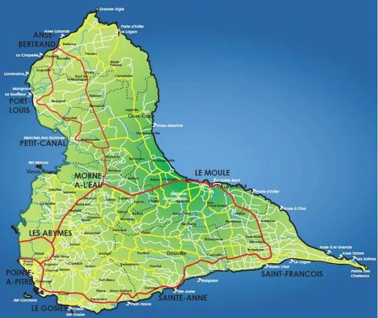
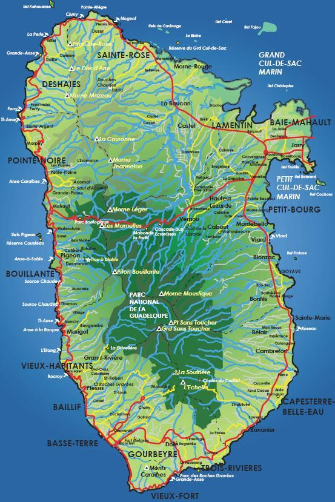
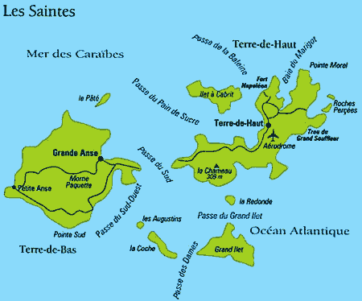
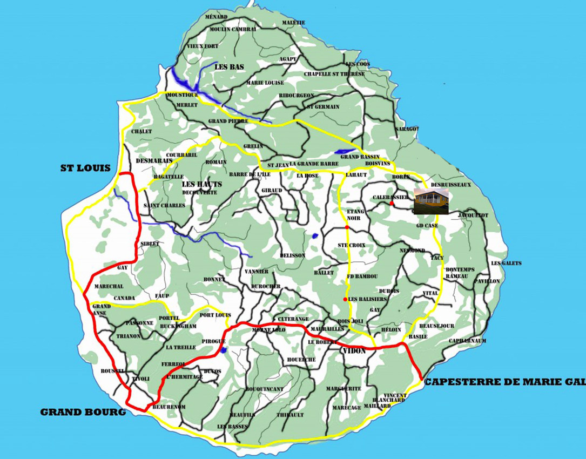
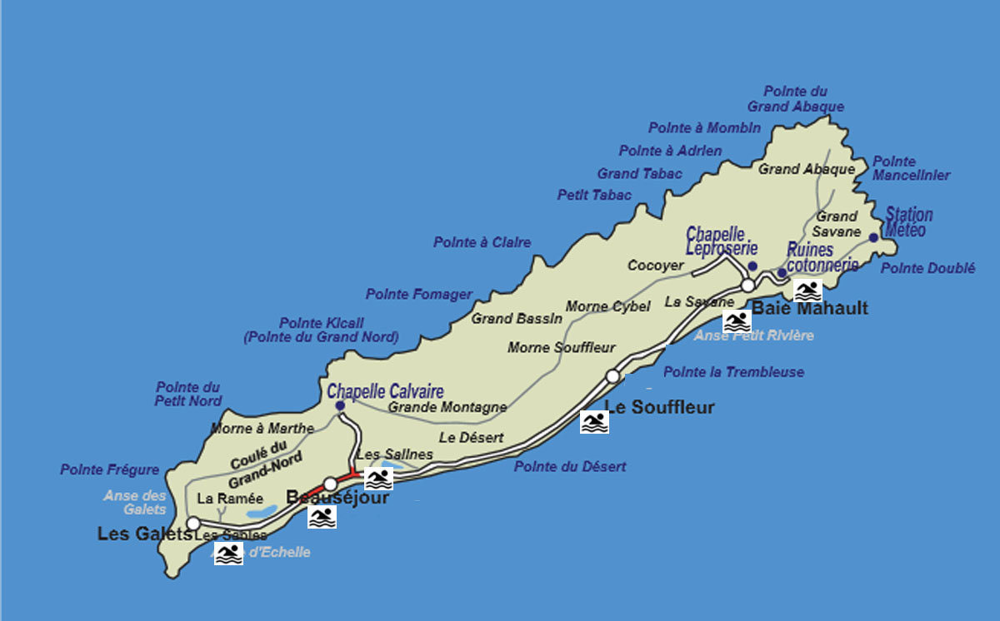

Une petite Géographie
La Grande Terre
Bienvenue en Grande-Terre, cette îles où les lagons turquoises côtoient une campagne riche. Les visites culturelles y sont nombreuses. Par exemple, le Mémorial ACTE, le Musée Schoelcher et Beauport le pays de la canne sont différents centres d'intérêt qui peuvent vous apprendre énormément sur l'histoire et la culture de l'archipel. Mais cette îles offre également une multitude de randonnées et de loisirs nautiques comme terrestres.
La Basse Terre
La Basse-Terre est dominée par la soufrière surnomé « la vieille dame », avec ses pentes recouvertes d’une forêt tropicale sublime, vous ferons découvrir l’immensité des fougères arborescentes. Vous découvrirer que la Basse-Terre est avant tout, une îles qui permet de se baigner sous une cascade, de vous prendre pour Tarzan en vous jetant dans l’un de ses sauts, ou encore de se balader dans l'immense forêt des mamelles.
Vous pourez égalemment visiter l'usine de rhum Bologne au sud de l'île.
La majestuosité de la montagne fait souvent oublier que Basse-Terre offre également des plages ainsi que des sources chaudes qui vous éblouiront. La Perle, Grande-Anse de Trois-Rivières et de Deshaies ne sont qu’un tout petit bout de ce que compte la Basse-Terre comme trésors.
Les Saintes
Au sud-est de la Basse-Terre se dresse 9 îlots. Deux sont habités, sept sont rester sauvages : le tout compose Les Saintes. Cet archipel, peut vous rappeler les dédales des pirates d’un temps révolu.
Aujourd’hui, l’ensemble de l’archipel a réussi de faire cohabiter les touristes et les traditions saintoises.
Le charme de ses îles réside, pour beaucoup, dans ses paysages grandioses. Terre-de-Haut fait ainsi partie de l'association des plus belles baies du monde. Les Saintes se sont aussi des plages paradisiaques et époustouflantes, comme la baie de Pompierre ou bien le Pain de Sucre. Pour les plus courageux, ce sont aussi des randonnées, comme celle menant à la fortification du chameau et offrant un point de vue à vous couper le souffle.
L’archipel saintois ne serait rien sans les hommes et leurs traditions. Les canots de pêches et les nasses font partie de ce décor. Qui vient aux Saintes ne peut en repartir sans son Salako et son tourment d’amour…
Marie-Galante
« La grande galette », comme on l'appelle ici en raison de sa forme ronde, est la troisième île des Antilles françaises en termes de superficie.
Elle revendique le titre de patrie de la canne à sucre… et du rhum ! Marie-Galante, surnommée « l’île aux cent moulins » possède toujours de vastes champs de cannes à sucre qui occupent la majorité des terres.Trois distilleries, auprès desquelles il n'est pas rare de croiser des chars à bœufs, fonctionnent encore et accueillent curieux et passionnés pour des dégustations. L'île possède également un patrimoine bâti extrêmement riche avec Murat, Roussel-Trianon, Bézard, ... autant de lieux où les déambulations pensives renvoient à un temps lointain.
Marie-Galante a donc su conserver son authenticité tout en développant son tourisme. Sa campagne radieuse et ses plages immaculées seront les points forts de votre séjour que vous pourrez compléter, si vous venez durant la Pentecôte, par le festival de musique "Terre de Blues".
La Désirade
« La grande galette », comme on l'appelle ici en raison de sa forme ronde, est la troisième île des Antilles françaises en termes de superficie.
Elle revendique le titre de patrie de la canne à sucre… et du rhum ! Marie-Galante, surnommée « l’île aux cent moulins » possède toujours de vastes champs de cannes à sucre qui occupent la majorité des terres.Trois distilleries, auprès desquelles il n'est pas rare de croiser des chars à bœufs, fonctionnent encore et accueillent curieux et passionnés pour des dégustations. L'île possède également un patrimoine bâti extrêmement riche avec Murat, Roussel-Trianon, Bézard, ... autant de lieux où les déambulations pensives renvoient à un temps lointain.
Marie-Galante a donc su conserver son authenticité tout en développant son tourisme. Sa campagne radieuse et ses plages immaculées seront les points forts de votre séjour que vous pourrez compléter, si vous venez durant la Pentecôte, par le festival de musique "Terre de Blues".
